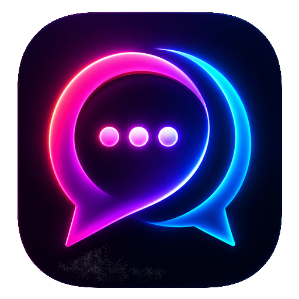

Mobile experience
Expo · React Native · Expo Router · TypeScript

NexTalkANDROID · COLLEGE PROJECT · OPEN SOURCE
A college-built Android prototype exploring how nearby people could message when internet access is unavailable.
Latest published APK: v1.2.1 · Source v1.2.3 is not yet released
NexTalk is an Android messaging prototype built with Expo, React Native, and a native Kotlin transport. It explores Google Nearby Connections and a same-Wi-Fi discovery fallback without a cloud chat server.
Display names and conversations are temporary. Pairing codes are intended for manual comparison, but they are not yet enforced as cryptographic identity verification.
One project, two layers: a mobile interface and a native Android transport.
Expo · React Native · Expo Router · TypeScript
Google Nearby Connections · Android NSD · TCP sockets · Kotlin
ECDH key agreement · AES-GCM payloads · identity verification and enforcement gaps remain
A STUDY IN RESILIENT COMMUNICATION